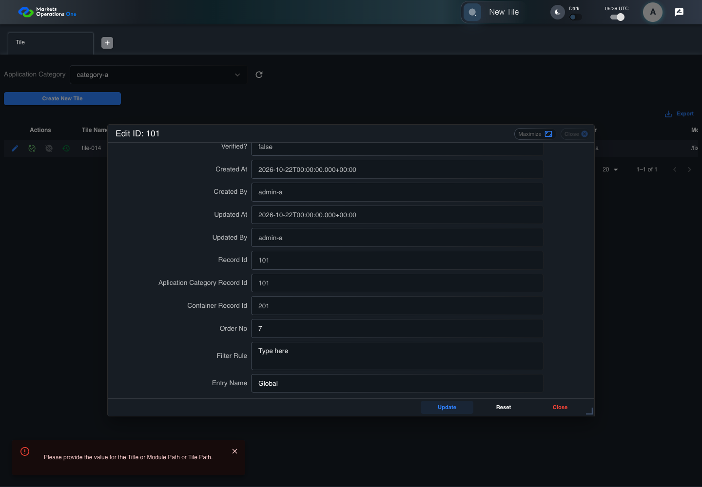

BFF-ADM-014 current BFF administration through actual UI
PASS · application/run-072/bff-adm-014-current-bff-administration-through-actual-ui-7d78495ed121-attempt-1 · ACTUAL_APPLICATION_LOCAL_SERVICES
Actual current React and exact-current BFF admin controllers/services/JPA with actual migration DDL in disposable PostgreSQL. Controlled OUD/EMS2 identities and local Spring bootstrap. Fixture SQL seeds/mutates isolated records; service errors are actual database errors. Undefined agreed messages remain unresolved acceptance.
2026-10-22T06:39:34.204Z to 2026-10-22T06:39:39.794Z
Assertions and result · Artifact manifest · Exact run inputs and source hashes
Result SHA-256:e15c3629da21c6c86a7f1ee5fc56ddcbe0123ea67d004b07c62b7a33dfaa0bc3Machine observations
- actual-identity-projection.json
ad52f17f3b2dac8bc57ba7959768312acf5b5bfb10517c0acdc1e7cc878a34f2 - baseline-inputs.json
3a163a99459a77f5eb5210a2abf0cec57dc25a682be932ead099dc4691e0c7c0 - bff-boundary.json
77b015f26e384d8e87f6a2ae065f462740204918477ea5b241766a96a24eab34 - committed-ui-submission-comparisons.json
522a1af74b3318342cde7f20a9c7a44dd951968481b045921c021a11b02055c7 - empty-filter-rule-representation.json
c37f11f3d4bd4ab3a8d60e6d8ae9fcda074610272e8b5df29114286a9db3539d - fixture-step-10.json
10f925370f99c464f77e2aafe768fc0c1e319b95bec41a61320eb151385a77b6 - fixture-step-11.json
c093190a112389e366cb2c67433db78ba9677f7355a58f439839c5cdcf8e97aa - fixture-step-6.json
a12b47b2c7d5562dd949593bb784da28417004bf22b00d2c4d9d2a2eae66d576 - fixture-step-7.json
415a1f537db9824ca9ea2d9b6c65a38d1e14ccec52b8490e128eba34e2876f9a - fixture-step-8.json
cd1162f011887b24867b69cbaea020f938bd00a6a37747f2db03a3eb30ffe978 - fixture-step-9.json
e7e495ac27160c65da7b44b6eed050dc6604a4d458433d369754d413711c75f1 - initial-persisted-records.json
920579bd815872fdab73452f5fdd47d4ef8652b9773ca12a814f2782a7d6bdba - persisted-after-submit.json
c33e62f72a28f8723fc58652e473505fac40e3ff9e899f2c1c719690089eb84b - reference-snapshot-3.json
d96030aed03fd381162be24f50d5a4c5f7a887c61a7022477767a345ba23b197 - reference-snapshot-4.json
6330e524c20dc249076a032aafc9d38a7b1657fa725276b4772dda6bc94b4871 - ui-origin-bff-requests.json
0653812db769aaf256cc4a00b0dbe2e390f016bdca4ade305c5319b842fb8e9f
Screenshot capture: CAPTURED. Named frames: 23.
Step screenshot evidence: COMPLETE. 22/22 canonical steps have execution screenshots.
Canonical step timeline
Given Admin A uses subject "admin-a" with role "FMO_ADMIN" in an isolated authenticated browser
Execution: PASSED.1. step-01 Visible state after step 1: Given Admin A uses subject "admin-a" with role "FMO_ADMIN" in an isolated authenticated browser
2026-10-22T06:39:35.952Z · 1440×1000
Step: /Users/lushevol/code/github/ratan-release-impact/workbench/tasks/ui-test-coverage-20261022/test-cases.md:15216
SHA-256:2ab59859d5d151f8be8f2fa71deb06b0dad68f75495f2a3aabcdcb23ab8d1215And the controlled Tile fixture records the initial grid rows and persisted values
Execution: PASSED.2. step-02 Visible state after step 2: And the controlled Tile fixture records the initial grid rows and persisted values
2026-10-22T06:39:36.071Z · 1440×1000
Step: /Users/lushevol/code/github/ratan-release-impact/workbench/tasks/ui-test-coverage-20261022/test-cases.md:15217
SHA-256:2970a1f72ad849efc9facd86ba7daf604d60d38149a57bd651abde0823d1b328And Category 101 has label "category-a" and Import Map 201 has Module Name "container-a"
Execution: PASSED.3. step-03 Visible state after step 3: And Category 101 has label "category-a" and Import Map 201 has Module Name "container-a"
2026-10-22T06:39:36.118Z · 1440×1000
Step: /Users/lushevol/code/github/ratan-release-impact/workbench/tasks/ui-test-coverage-20261022/test-cases.md:15218
SHA-256:6254e224407944658bb60ed6fccbee8c0b5e7f8a55d0aaab5aef475475d08609And both references belong to "FMO_ADMIN" and the Tile page category filter value is Category 101
Execution: PASSED.
4. step-04 Visible state after step 4: And both references belong to "FMO_ADMIN" and the Tile page category filter value is Category 101
2026-10-22T06:39:36.168Z · 1440×1000
Step: /Users/lushevol/code/github/ratan-release-impact/workbench/tasks/ui-test-coverage-20261022/test-cases.md:15219
SHA-256:6254e224407944658bb60ed6fccbee8c0b5e7f8a55d0aaab5aef475475d08609And the Tile grid has record "101" owned by "FMO_ADMIN"
Execution: PASSED.5. step-05 Visible state after step 5: And the Tile grid has record "101" owned by "FMO_ADMIN"
2026-10-22T06:39:36.201Z · 1440×1000
Step: /Users/lushevol/code/github/ratan-release-impact/workbench/tasks/ui-test-coverage-20261022/test-cases.md:15220
SHA-256:48dde6e155c59083445044635c6e74f09f0c551a6120e64e5ae390d9b5454aa0And the baseline fixture data defines "Tile Name" as "tile-014"
Execution: PASSED.
6. step-06 Visible state after step 6: And the baseline fixture data defines "Tile Name" as "tile-014"
2026-10-22T06:39:36.251Z · 1440×1000
Step: /Users/lushevol/code/github/ratan-release-impact/workbench/tasks/ui-test-coverage-20261022/test-cases.md:15221
SHA-256:48dde6e155c59083445044635c6e74f09f0c551a6120e64e5ae390d9b5454aa0And the baseline fixture data defines "Module Path" as "/fixture"
Execution: PASSED.7. step-07 Visible state after step 7: And the baseline fixture data defines "Module Path" as "/fixture"
2026-10-22T06:39:36.324Z · 1440×1000
Step: /Users/lushevol/code/github/ratan-release-impact/workbench/tasks/ui-test-coverage-20261022/test-cases.md:15222
SHA-256:629ed49a4e4d29d339f8f09d43fbfbcd2385220b263c9740e8a8f8ea3b6fcd38And the baseline fixture data defines "Tile Path" as "/case-014"
Execution: PASSED.8. step-08 Visible state after step 8: And the baseline fixture data defines "Tile Path" as "/case-014"
2026-10-22T06:39:36.369Z · 1440×1000
Step: /Users/lushevol/code/github/ratan-release-impact/workbench/tasks/ui-test-coverage-20261022/test-cases.md:15223
SHA-256:2fabbfff6287d7476bdd696fff3ca0ca9047ff866136db582e2c4ea9eb3f8370And the baseline fixture data defines "Role Entities" as "E-TRADE"
Execution: PASSED.9. step-09 Visible state after step 9: And the baseline fixture data defines "Role Entities" as "E-TRADE"
2026-10-22T06:39:36.419Z · 1440×1000
Step: /Users/lushevol/code/github/ratan-release-impact/workbench/tasks/ui-test-coverage-20261022/test-cases.md:15224
SHA-256:d1608d6375ed64c83cbef81367f3834b5524536a9384161e02532b68cdaf72cbAnd the baseline fixture data defines "Filter Rule" as ""
Execution: PASSED.
10. step-10 Visible state after step 10: And the baseline fixture data defines "Filter Rule" as ""
2026-10-22T06:39:36.469Z · 1440×1000
Step: /Users/lushevol/code/github/ratan-release-impact/workbench/tasks/ui-test-coverage-20261022/test-cases.md:15225
SHA-256:9539d0f88eee29656a85decc6473ca4b6a47bc67f1ca1973093f40bf1081421bAnd the baseline Tile references use "Aplication Category" "category-a" and "Container" "container-a"
Execution: PASSED.11. step-11 Visible state after step 11: And the baseline Tile references use "Aplication Category" "category-a" and "Container" "container-a"
2026-10-22T06:39:36.503Z · 1440×1000
Step: /Users/lushevol/code/github/ratan-release-impact/workbench/tasks/ui-test-coverage-20261022/test-cases.md:15226
SHA-256:9539d0f88eee29656a85decc6473ca4b6a47bc67f1ca1973093f40bf1081421bWhen Admin A clicks the button labeled "Edit" in the Tile grid row with "Record Id" "101"
Execution: PASSED.12. step-12 Visible state after step 12: When Admin A clicks the button labeled "Edit" in the Tile grid row with "Record Id" "101"
2026-10-22T06:39:36.779Z · 1440×1000
Step: /Users/lushevol/code/github/ratan-release-impact/workbench/tasks/ui-test-coverage-20261022/test-cases.md:15227
SHA-256:490a375f090dd668430a996c525dae76410511782471c5e2cd0095f948481679Then the dialog titled "edit ID: 101" is visible on the Tile administration page
Execution: PASSED.13. step-13 Visible state after step 13: Then the dialog titled "edit ID: 101" is visible on the Tile administration page
2026-10-22T06:39:36.826Z · 1440×1000
Step: /Users/lushevol/code/github/ratan-release-impact/workbench/tasks/ui-test-coverage-20261022/test-cases.md:15228
SHA-256:80ec5a06fb68de80158e53925ad1a72feb8014b63d6f0a8f2da0002de11314abWhen Admin A fills the textbox labeled "Tile Name" with "" in dialog "edit ID: 101"
Execution: PASSED.14. step-14 Visible state after step 14: When Admin A fills the textbox labeled "Tile Name" with "" in dialog "edit ID: 101"
2026-10-22T06:39:37.243Z · 1440×1000
Step: /Users/lushevol/code/github/ratan-release-impact/workbench/tasks/ui-test-coverage-20261022/test-cases.md:15229
SHA-256:e37c99892c193fa7e4b34c2b7a6e8ca4d39c93409e6f54780a5a021e4eb353eaAnd Admin A fills the textbox labeled "Module Path" with "/fixture" in dialog "edit ID: 101"
Execution: PASSED.15. step-15 Visible state after step 15: And Admin A fills the textbox labeled "Module Path" with "/fixture" in dialog "edit ID: 101"
2026-10-22T06:39:37.661Z · 1440×1000
Step: /Users/lushevol/code/github/ratan-release-impact/workbench/tasks/ui-test-coverage-20261022/test-cases.md:15230
SHA-256:e5047187674fa17c8675b772e6777550ea4fc8909eaf90c7b1a2aa6362c149b1And Admin A fills the textbox labeled "Tile Path" with "/case-014" in dialog "edit ID: 101"
Execution: PASSED.16. step-16 Visible state after step 16: And Admin A fills the textbox labeled "Tile Path" with "/case-014" in dialog "edit ID: 101"
2026-10-22T06:39:38.081Z · 1440×1000
Step: /Users/lushevol/code/github/ratan-release-impact/workbench/tasks/ui-test-coverage-20261022/test-cases.md:15231
SHA-256:539b59ce296c85f7055a46b779b519d6d9a24c24d78ca673f9f3cd689d3ba486And Admin A fills the textarea labeled "Role Entities" with "E-TRADE" in dialog "edit ID: 101"
Execution: PASSED.17. step-17 Visible state after step 17: And Admin A fills the textarea labeled "Role Entities" with "E-TRADE" in dialog "edit ID: 101"
2026-10-22T06:39:38.494Z · 1440×1000
Step: /Users/lushevol/code/github/ratan-release-impact/workbench/tasks/ui-test-coverage-20261022/test-cases.md:15232
SHA-256:d659f891a27407304fc2acae29d5573c9bf42d40e744403b852574aa7d77fd22And Admin A fills the textarea labeled "Filter Rule" with "" in dialog "edit ID: 101"
Execution: PASSED.18. step-18 Visible state after step 18: And Admin A fills the textarea labeled "Filter Rule" with "" in dialog "edit ID: 101"
2026-10-22T06:39:38.909Z · 1440×1000
Step: /Users/lushevol/code/github/ratan-release-impact/workbench/tasks/ui-test-coverage-20261022/test-cases.md:15233
SHA-256:6fbc6b6244d712d1adab207ab99ab34cc11e71e454bcf52c19831bb3d0695c18And Admin A clicks the button labeled "Update" in dialog "edit ID: 101"
Execution: PASSED.19. step-19 Visible state after step 19: And Admin A clicks the button labeled "Update" in dialog "edit ID: 101"
2026-10-22T06:39:39.176Z · 1440×1000
Step: /Users/lushevol/code/github/ratan-release-impact/workbench/tasks/ui-test-coverage-20261022/test-cases.md:15234
SHA-256:385bf44757f5d3f96b39b99d9a4cfe70868c87e1f1737b8384da30a5b770f9dcThen the dialog titled "edit ID: 101" remains visible on the Tile administration page
Execution: PASSED.20. step-20 Visible state after step 20: Then the dialog titled "edit ID: 101" remains visible on the Tile administration page
2026-10-22T06:39:39.224Z · 1440×1000
Step: /Users/lushevol/code/github/ratan-release-impact/workbench/tasks/ui-test-coverage-20261022/test-cases.md:15235
SHA-256:d09812138557bd9c1545347081e98799c72399eb48cb75e1eaf4d90f68468138And the alert with severity "error" in the portal snackbar contains the exact text "Please provide the value for the Title or Module Path or Tile Path."
Execution: PASSED.
21. step-21 Visible state after step 21: And the alert with severity "error" in the portal snackbar contains the exact text "Please provide the value for the Title or Module Path or Tile Path."
2026-10-22T06:39:39.274Z · 1440×1000
Step: /Users/lushevol/code/github/ratan-release-impact/workbench/tasks/ui-test-coverage-20261022/test-cases.md:15236
SHA-256:3d4ca0ebae7fe6a7b7a0b41597aec354d343afbe6d292bc834077007117b40c1And the Tile data grid with column "Record Id" row identifiers and loaded field values equal the initial grid snapshot on the Tile administration page
Execution: PASSED.22. step-22 Visible state after step 22: And the Tile data grid with column "Record Id" row identifiers and loaded field values equal the initial grid snapshot on the Tile administration page
2026-10-22T06:39:39.393Z · 1440×1000
Step: /Users/lushevol/code/github/ratan-release-impact/workbench/tasks/ui-test-coverage-20261022/test-cases.md:15237
SHA-256:45db558b7d3233823bd8bccb217a9cc5ea404d57c765fe387e70461d92684d82
Additional named frames
Screenshots establish visible state only. Assertions and traces support functional claims.